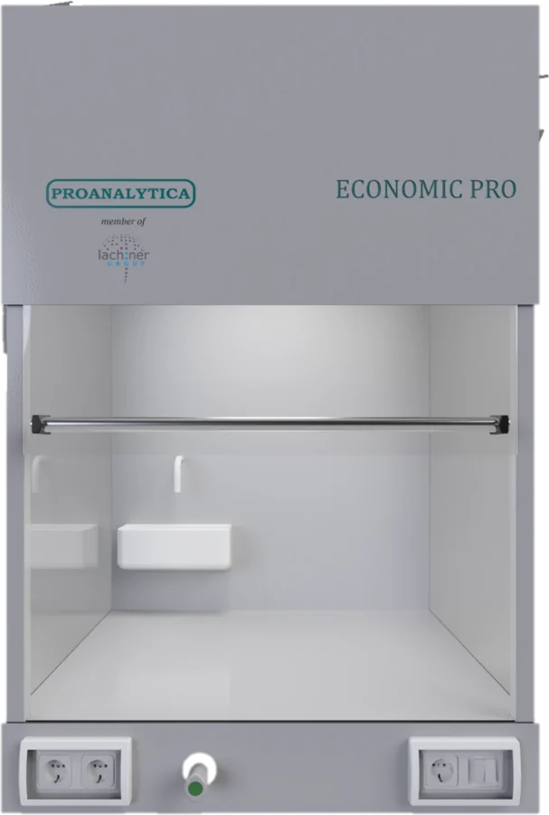

Benchtop fume hood
Economic PRO
Economic PRO is a benchtop fume hood from our own production, with a lightweight construction and chemical-resistant protection of the entire working area. This model is easy to relocate, yet still offers a wide range of standard and optional equipment: water, power and gas supply, a UV lamp and more. The fume hood can be fitted into your existing laboratory setup, but it is often supplied with a matching bench that we build to our own standard specifically for laboratory use, using proven materials from our range. If your work does not involve high thermal loads or a high capacity for extracting harmful vapours, this is the right choice for your laboratory!